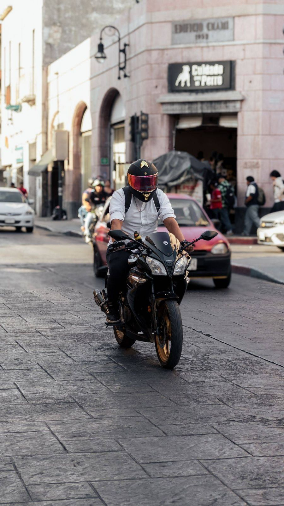
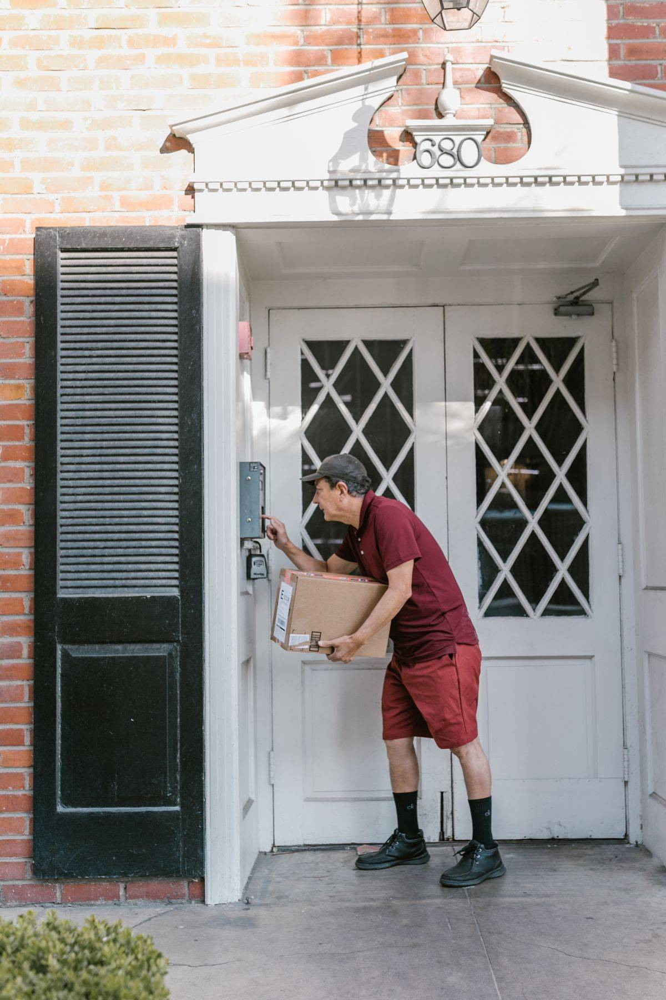

SIM C kamu sebentar lagi habis? Jangan tunggu sampai kedaluwarsa. Per Oktober 2026, perpanjangan SIM C bisa kamu urus penuh dari HP lewat aplikasi Digital Korlantas Polri, tanpa antre seharian di SATPAS. Syaratnya satu yang paling penting: SIM kamu masih berlaku saat mengajukan. Kalau sudah lewat masa berlakunya, jalur online ini tidak berlaku dan kamu harus mengurus penerbitan baru di SATPAS.
Artikel ini memandu kamu dari nol: dokumen yang harus disiapkan, dua tes yang wajib dilewati, langkah di aplikasi, sampai SIM baru sampai di rumah.
Syarat yang Harus Kamu Siapkan
Sebelum membuka aplikasi, siapkan dulu semua ini supaya pengajuanmu tidak ditolak karena berkas buram atau tidak lengkap.
Pertama, e-KTP yang masih berlaku dan foto SIM C lamamu. Kedua, pas foto terbaru berlatar biru. Ini bukan swafoto. Pakai foto formal seperti pas foto biasa, dengan wajah jelas dan latar biru. Ketiga, foto tanda tanganmu di atas kertas putih polos, pakai tinta tebal yang jelas.
Keempat, hasil tes kesehatan dan tes psikologi. Keduanya wajib dan hasilnya tercatat secara online. Tes kesehatan dilakukan lewat situs erikkes.id, sedangkan tes psikologi lewat app.eppsi.id. Simpan bukti kedua tes itu baik-baik karena akan diunggah di aplikasi.
Satu hal yang sering bikin pengajuan gagal: foto yang buram atau terpotong. Foto ulang saja kalau hasilnya gelap atau tulisannya tidak terbaca. Berkas yang tidak jelas bisa ditolak saat verifikasi, dan itu cuma membuang waktu kamu.

Langkah Perpanjang SIM C Online
Ikuti urutan ini supaya tidak ada langkah yang terlewat.
- Unduh aplikasi Digital Korlantas Polri dari Google Play Store atau App Store, lalu daftar pakai nomor HP aktif. Masukkan kode OTP yang dikirim lewat SMS, lalu buat PIN dan konfirmasi PIN itu.
- Lengkapi profilmu dengan NIK, nama lengkap, dan alamat email. Setelah itu verifikasi e-KTP dengan metode liveness, yaitu memotret wajah sesuai arahan aplikasi. Pastikan wajah terlihat jelas, pencahayaan cukup, dan kamu tidak memakai masker, kacamata, atau topi.
- Kerjakan tes kesehatan di erikkes.id dan tes psikologi di app.eppsi.id. Tes psikologi lewat jalur ini biayanya Rp37.500.
- Buka menu SIM di aplikasi, lalu pilih Perpanjangan SIM. Unggah semua dokumen: e-KTP, foto SIM lama, pas foto latar biru, foto tanda tangan, dan bukti hasil kedua tes.
- Pilih SATPAS penerbit sesuai domisili atau pilihanmu. Isi juga nomor rekening bank untuk pengembalian dana, jaga-jaga kalau pengajuanmu ditolak karena berkas tidak lengkap.
- Pilih cara menerima SIM baru: diantar ke rumah lewat Pos Indonesia atau diambil sendiri di SATPAS pada jam operasional. Kalau pilih diantar, tulis alamat selengkap dan sejelas mungkin.
- Lakukan pembayaran lewat virtual account BNI yang muncul di aplikasi. Sesudah membayar, pantau status transaksimu secara berkala lewat menu Transaksi di aplikasi.
Prosesnya umumnya memakan 3 sampai 7 hari kerja, tergantung antrean di SATPAS yang kamu pilih. Pengajuan yang masuk sesudah pukul 15.00 WIB akan diproses pada hari kerja berikutnya, jadi jangan mengajukan mepet tenggat kalau kamu tidak mau deg-degan.

Berapa Biaya Perpanjang SIM C Online
Biaya resmi PNBP untuk perpanjangan SIM C adalah Rp75.000, merujuk PP Nomor 76 Tahun 2020. Angka ini belum termasuk biaya tes psikologi Rp37.500, biaya tes kesehatan, serta biaya layanan, pengemasan, dan ongkir kalau kamu memilih SIM diantar ke rumah.
Jadi, siapkan dana lebih dari Rp75.000. Total akhirnya tergantung pilihanmu: tes kesehatan di fasilitas mana dan apakah SIM diantar atau diambil sendiri. Semua biaya ini dibayar lewat jalur resmi di aplikasi, bukan lewat perantara. Kalau ada yang menawarkan perpanjangan kilat dengan biaya tambahan di luar aplikasi, abaikan saja.
Kalau Pengajuanmu Ditolak atau SIM Sudah Mati
Pengajuan yang ditolak biasanya karena satu dari tiga hal: foto buram, data tidak cocok dengan e-KTP, atau bukti tes belum lengkap. Perbaiki bagian yang bermasalah, lalu ajukan ulang dengan berkas yang lebih jelas. Nomor rekening yang kamu isi di awal dipakai untuk pengembalian dana bila pengajuan ditolak.
Kalau SIM kamu sudah kedaluwarsa, jangan memaksakan jalur online. Aturannya jelas: perpanjangan hanya untuk SIM yang masih berlaku. SIM yang sudah mati harus diurus sebagai penerbitan baru di SATPAS. Karena itu, cek tanggal habis SIM kamu sekarang juga. Mengurusnya dua minggu sebelum habis jauh lebih tenang daripada mengurusnya di hari terakhir.
Kabar baiknya, Korlantas juga memperkenalkan Kiosk SIM pada Oktober 2026, mesin cetak mandiri yang terhubung dengan aplikasi Digital Korlantas. Sesudah perpanjangan digitalmu terverifikasi, kartu SIM fisik bisa dicetak sendiri di kiosk dalam hitungan menit, tanpa antre panjang. Kiosk ini baru diperkenalkan, jadi cek dulu lewat aplikasi atau kanal resmi NTMC Polri sebelum kamu mengandalkannya.
Sesudah Bayar, Tinggal Tunggu SIM Datang
Sesudah pembayaran terkonfirmasi, tugasmu tinggal memantau status di aplikasi. Kalau memilih antar ke rumah, pastikan ada yang bisa menerima paket di alamat yang kamu tulis.

Perpanjang SIM C online per Oktober 2026 memang tidak gratis, tapi jelas jauh lebih hemat waktu daripada antre di SATPAS. Siapkan dokumen dari sekarang, kerjakan dua tesnya lebih dulu, lalu ajukan lewat aplikasi Digital Korlantas Polri sebelum SIM kamu habis.
← Kembali ke Other